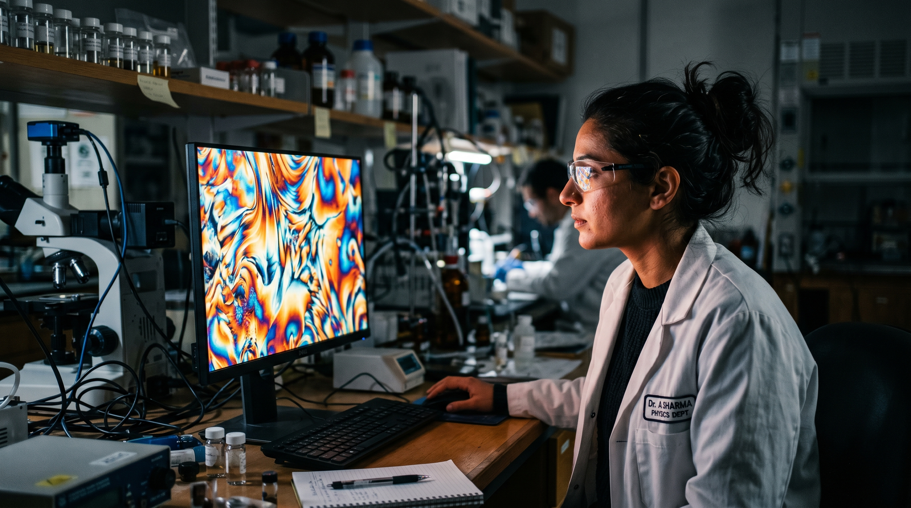
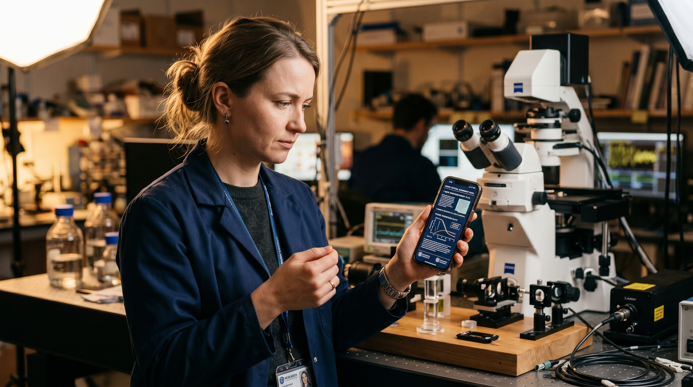

Project Context
§ 01The Challenge / Hypothesis
Liquid crystals are a state of matter that is simultaneously fluid and ordered — molecules that flow like a liquid but align like a crystal. They are extraordinarily difficult to work with and extraordinarily useful. The question at the heart of the Kent State story: how did a mid-size university in northeast Ohio become the global center of liquid crystal research for over 50 years?
The Solution / Innovation
The Advanced Liquid Crystal Institute (ALCI) at Kent State invented, refined, and continues to lead the science behind LCD technology — the display in every smartphone, laptop, and television screen on the planet. The five-researcher cluster represents decades of sustained dominance in a field most people have never heard of. The podcast episode explores what it means to create something so embedded in daily life that its origin has become invisible. The visual opportunity is extraordinary: polarized light microscopy turns liquid crystals into living stained glass.
Scientific Workflow
§ 02Material Synthesis
New liquid crystal compounds synthesized in the chemistry lab. The material in its raw state is often unremarkable — clear or slightly oily liquids.
Polarized Light Microscopy
The signature visual of liquid crystal research. When viewed under polarized light, liquid crystal samples produce vivid interference colors and geometric patterns — biological-looking, achingly beautiful. This is the visual identity of the field.
Phase Transition Observation
Heating or cooling a liquid crystal sample through its phase transition — the moment it transforms from one alignment to another, visible in real time under the microscope. The colors shift and reorganize.
Device Integration
The science applied — test cells, prototype displays, functional LC devices. The bridge between the fundamental material and the technology in your pocket.
---
Shot Concepts
§ 03One researcher (or the full cluster) positioned with a large-format print or projection of polarized light microscopy imagery behind them — the liquid crystal patterns as an environment. The vivid, impossible colors of the microscopy images spill across white lab coats and faces. This is what the work looks like when made visible.
- Project or print the most visually striking LC polarized image available
- Choose patterns with strong saturation: blues, magentas, greens, golds
- Position subjects close enough to the projection for color spill on faces
- Use a low-power key light to maintain face detail
- Can be one researcher or the full five-person cluster
Technical Notes
Setup Diagram
[projected LC polarized imagery]
vivid color fills background
key light (low)
[researchers]
color spill on faces
camera, 50mm

AI Visualization Prompt
An extreme close-up of a liquid crystal sample under polarized light — the microscopy image itself, filling the entire frame. The patterns look alive: concentric rings, branching textures, color interference bands that shift as the sample moves. No human. Pure material science as visual art.
- Shoot directly off the microscope monitor or use a camera adapter on the microscope ocular for direct capture
- Request samples with the most visually striking patterns — texture defects (disclinations) create the most interesting imagery
- Full frame, maximum color saturation, no borders
- This is a standalone UPAA-eligible image
Technical Notes
Setup Diagram
[polarized light microscope]
monitor showing vivid LC patterns
camera — slight angle to eliminate reflection
or camera adapter on microscope ocular

AI Visualization Prompt
A researcher holding a smartphone or laptop screen — the everyday LCD object — with the microscopy lab visible in the background. The juxtaposition: the invisible science inside the device you hold, made visible in the lab behind them. The image that answers: why does this matter?
- The phone or laptop screen should be on and displaying something (a photo, a video) — not just a black mirror
- Position the subject so the lab environment (microscope, equipment) is clearly in the background
- This is a conceptual portrait, not a product photo — the device is the prop, not the subject
- Expression should be thoughtful, not posed-smiling
Technical Notes
Setup Diagram
softbox (warm, camera-left)
[researcher] [lab: microscope, equipment]
holding phone/laptop
camera, 50–85mm

AI Visualization Prompt
A researcher watching a liquid crystal sample through the microscope eyepiece (or on the monitor) during a phase transition — the moment the material reorganizes its molecular alignment visibly in real time. The researcher's face and the changing pattern on screen, simultaneously in frame. Science happening.
- Coordinate to shoot during an actual heating/cooling experiment
- The monitor should show the pattern mid-transition if possible
- 3/4 profile — show face and screen together
- The expression of watching something change is the image
Technical Notes
Setup Diagram
[microscope monitor: pattern in transition]
color shifting in real time
[researcher]
3/4 profile watching
camera, 85mm
